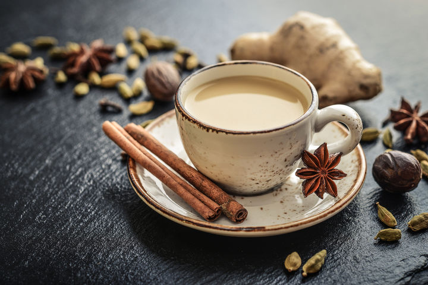

내가 좋아하는 것들
Movie
Youtube
MilkTea
Book
MilkTea

얼그레이 밀크티
이미 유명한 홍차!
얼그레이는 향을 입힌 차이므로 로얄밀크티처럼 끓이면 얼그레이의 향을 제대로 느낄 수 없다.
냉침
해서 먹는게 베스트!
얼그레이는 다만프레르 브랜드를 추천한다.
잉글리쉬 블랙퍼스트
영국식 홍차
블렌드 티인데, 아쌈과 실론을 섞는 경우가 많다
어떻게 먹어도 사실 다 맛있다!
잉글리쉬 블랙퍼스트는 로네펠트 브랜드를 추천한다